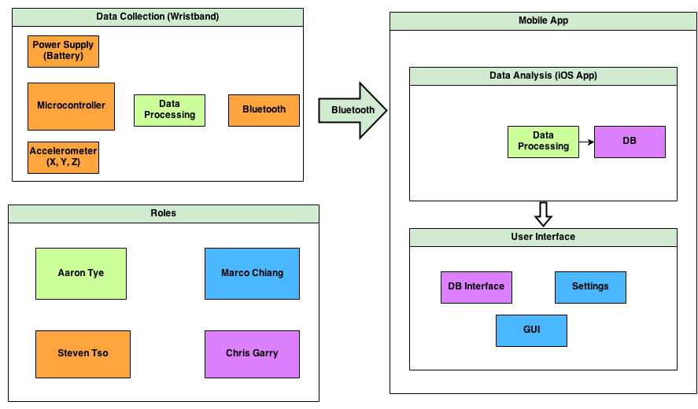

Leaf Design
Leaf is being designed to eliminate the need to store and exchange contact information by allowing users to make social media connections with a simple handshake. This will be accomplished by implementing a wrist bracelet that monitors movement data using an accelerometer. When the bracelet detects a handshake in the accelerometer data using the on-board handshake detection algorithm, the portion of the movement data encapsulating the handshake is sent to the user’s mobile phone via Bluetooth, which then pushes the data to the back-end server of the Leaf mobile application. The back-end server will store the accelerometer data and timestamp followed by executing the back-end matching algorithm to determine which two Leaf users shook hands at the specified timestamp by comparing handshake data. Once the user’s identities are confirmed, the server will push basic information (name) of the respective persons to the mobile devices of each user involved in the handshake, where the user can then approve or disapprove the connection request. If a request is approved, the app will send a connection request on the social network defined in the mobile app settings. The connection request must be approved on both participating devices in order for the application to initiate it on the appropriate social network.
